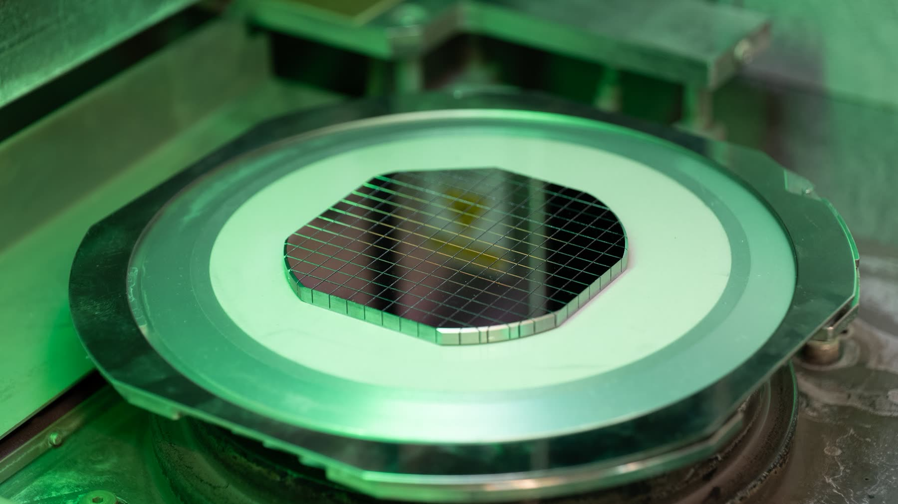
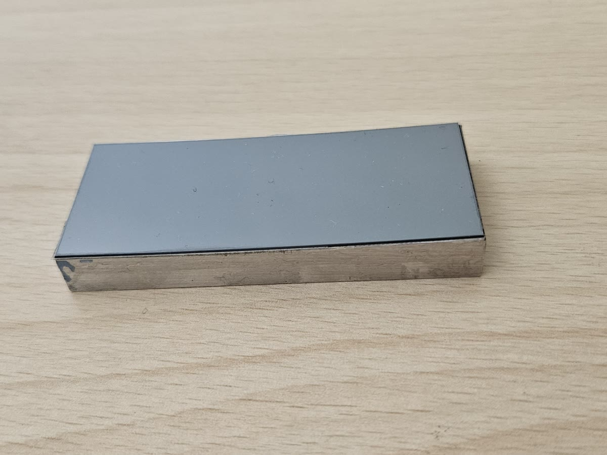
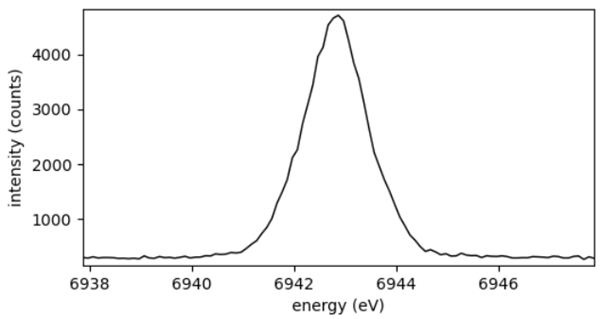
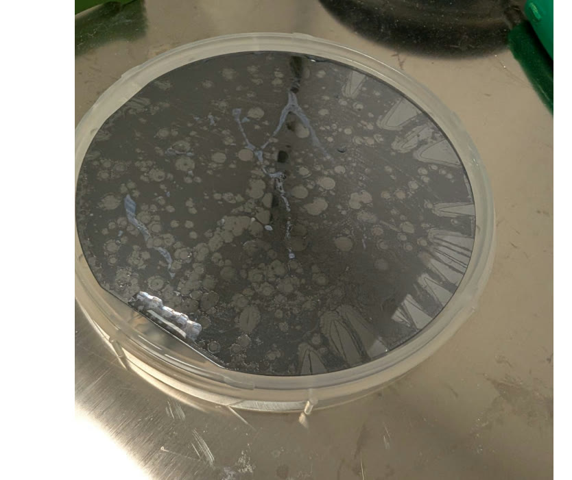
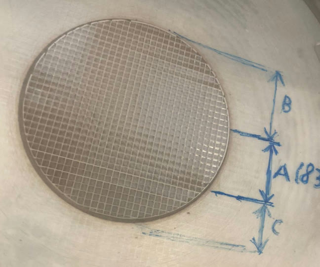
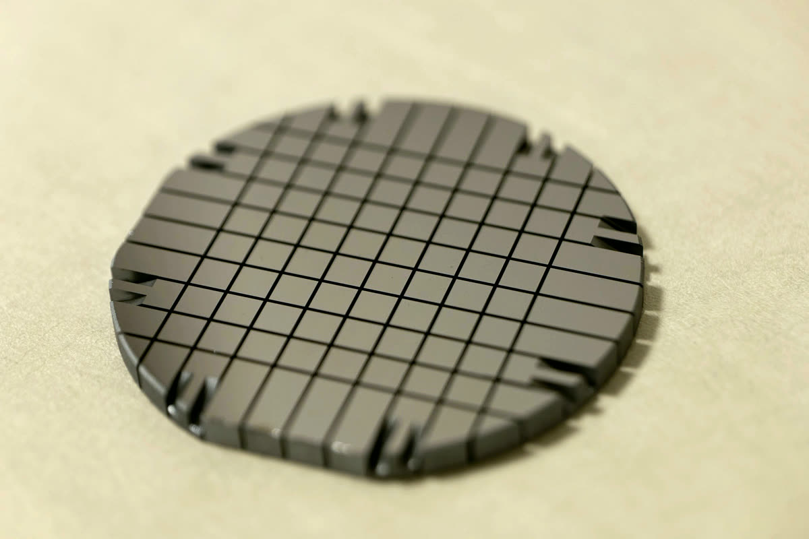
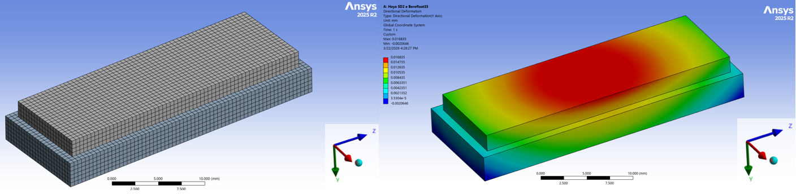
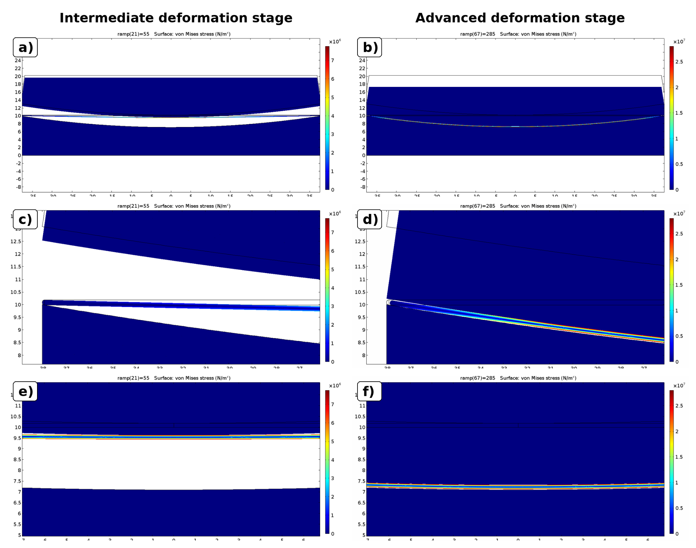
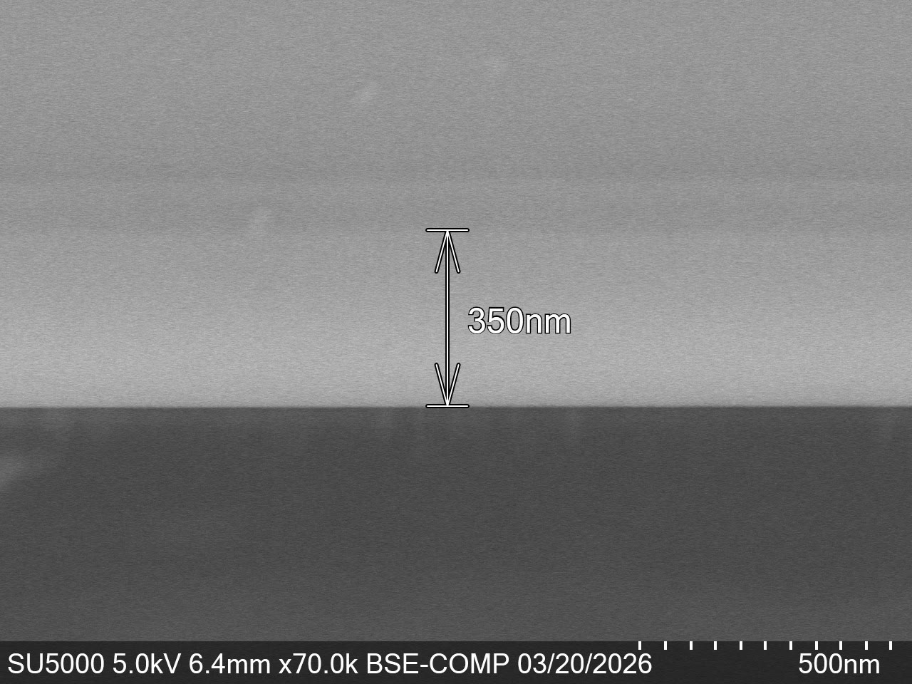

Crystal BOND / Progress
Progress
The first bonded analysers on a synchrotron, cylindrical silicon crystals ready for the next one, the models to design them and the bonding equipment.

 Ferrara
FerraraCylindrical Si(111) crystals, R = 1 m
Two silicon (111) crystals, 0.3 mm thick, bonded on cylindrical substrates of 1 m radius: one on glass (72 × 24 mm), one on aluminium (70 × 30 mm). X-ray diffraction confirmed the orientation, a (111) surface with (110) and (211) edges, with rocking curves of the (111) and (333) reflections and of the asymmetric (331), (422) and (440). Both are prepared for X-ray deflection tests at the SOLEIL synchrotron.

FerraraSilicon on a metal substrate
An aluminium substrate machined to a 1 m radius carries the second crystal. Both surfaces are cleaned with a peelable polymer film that lifts the dust, an epoxy film (Araldite 2020) is spin-coated on the substrate, and the crystal is pressed on it at 2 bar under vacuum for 24 hours, then checked on the interferometric microscope.
- Ferrara
A bonding polymer instead of glue
PermiNex 1005, a photo-patternable bonding polymer, is spin-coated to about 7 µm, soft-baked, exposed to UV and bonded hot under pressure; the glass-substrate crystal was made this way. UV activation of the wafer lowered the edge bead from 13 to 9 µm. The remaining edge effect points to bonding where the polymer starts to flow, around 60–70 °C, and to working in the cleanroom to avoid trapped dust.
- Ferrara
Whole wafers in spherical lenses
The next step is a Ø 100 mm silicon wafer bonded into a concave glass lens of 0.5 m radius with a UV-curing adhesive. Models of the stress in the wafer and in the adhesive set the pressing pressure, about 1.5–2 bar, and how large a trapped void may be; a manual membrane press with a 365 nm LED source below the lens has been designed for this step.

2025 against the plan
The milestones on silicon wafers for the LHC and on the FEM-assisted design of substrates were fully achieved. The procurement of the bonding equipment took longer than planned, as makers of microelectronics equipment were saturated by demand: it reached 75% by the end of the year and the tender was completed in February 2026. Meanwhile an interim adhesive route produced the first X-ray analysers.
 Ferrara
FerraraFirst analysers in quartz and lithium niobate
Quartz and lithium niobate crystals bonded with thin epoxy films onto glass spherical caps of 1 m radius. At the ESRF BM20 beamline the quartz (006) prototype gave an energy resolution of 1.4 eV FWHM, comparable to a silicon (111) analyser: a first attempt, and a very encouraging one. The lithium niobate analyser was scheduled for ESRF next.

FerraraThe spectrum behind the 1.4 eV
The line measured with the quartz analyser prototype at ESRF BM20, around 6.94 keV.
 Ferrara
FerraraBonding on a curved substrate, demonstrated
During the tender, makers ran demonstrations on our geometries: a silicon crystal bonded to a cylindrical glass substrate of 500 mm radius. The tender closed in February 2026 with SUSS MicroTec.

FerraraFrom droplets to a 2 µm film
Spin-coated epoxy first broke into droplets seconds after spinning. Six adhesives and a systematic study of the spin parameters and of surface activation later, Epotek 301 gave 2 µm films uniform within 150 nm.

FerraraDicing quartz and lithium niobate
A process recipe for materials that wear the diamond blade fast, found by varying blade speed, feed, depth, coolant flow and tape.

FerraraSilicon wafers for the LHC
Ø 100 mm, 2 and 5 mm thick, (110), intrinsic, dislocation-free, polished on both sides, with an off-axis angle specified at 0.02°: far from standard stock. Magnetorheological polishing brings the miscut below 100 µrad.

LegnaroModels of a crystal bonded to glass
FEM simulations of silicon bonded to glass at high temperature and cooled, and an analytical model that extends the classical bilayer to anisotropic crystals. They agree for Hoya SD2 and Borofloat 33 glass and for 2 and 3 mm crystals.

LegnaroLaying a thin crystal on a cylinder
Transient FEM of a 200 µm silicon layer bent onto a cylinder of 0.2 m radius: stress concentrates in the lamella at first contact, a guide for the substrate geometry and the mounting sequence.

LegnaroA look at the interface
SEM images of a bonded Si/glass sample show a very flat interface and a band about 350 nm wide, probably SiO₂ formed during anodic bonding. The new ion mill will open cross-sections on our own samples.
- Trieste
Crystals designed for imaging
A simulation tool for bent Laue crystals in biomedical imaging: silicon (110) with a 20° asymmetry towards (1-11) gives the wide band needed for multiple K-edge imaging between 15 and 40 keV. Motorised goniometers, test objects and contrast-agent phantoms were bought for the Elettra beamtimes.
- Frascati
Sharper X-ray tomography
Two high-precision linear stages from Physik Instrumente upgrade the CT setup: better positioning gives higher resolution and reproducibility, enough to resolve phases, defects and inclusions in the crystals.


Publications and talks
- Performance of short and long bent crystals for the TWOCRYST experiment at the Large Hadron ColliderBandiera L. et al. · European Physical Journal C 85 (2025) · includes the first crystal bent by anodic bonding, tested at the CERN SPS
- Anodic bonding to manufacture Laue lenses for high-energy astrophysicsMazzolari A., Frontera F., Romagnoni M., Guidi V. et al. · Proc. SPIE 12576, 125760F (2023)
- Bonded bent crystals for accelerators, synchrotron X-ray optics and Laue lensesA. Mazzolari on behalf of the BOND Collaboration · conference talk